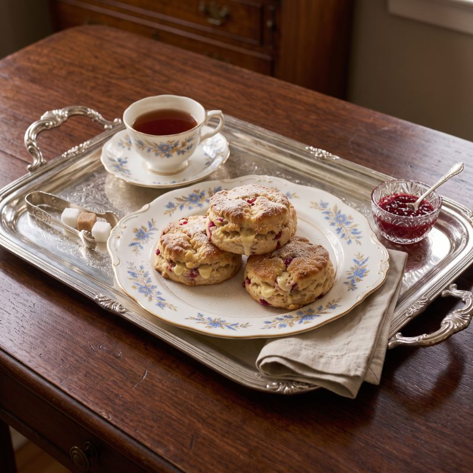

Raspberry & White Chocolate Scones (The Only Ones You Need)
JUMP TO RECIPE
Okay, so I have to tell you about the summer we spent at my aunt's cabin up north. It was the summer before I started grade eleven, the summer of the great raccoon incident (a story for another post!), and the summer I finally, FINALLY figured out what makes a scone tall and tender instead of flat and tough. Spoiler: it's cold butter, grated. But I'm getting ahead of myself.
My aunt Réjeanne had this tiny kitchen with an oven that ran hot, and a radio that only got one station, and she would put me to work every afternoon. "You want scones, you make scones," she'd say, which is basically the whole philosophy of this blog if we're being honest.
Anyway. We made a LOT of scones that summer. We tried softened butter (flat, greasy, sad). We tried fresh raspberries (pink dough, mush). We tried skipping the rest in the fridge (they spread like cookies). And then one rainy Tuesday my aunt handed me the box grater, a stick of butter straight from the freezer and a bag of frozen berries, and something magical happened.
Fast forward twenty years (don't do the math) and this is still the scone I make when someone in my house has had a bad day, when the neighbours have a baby, when it's raining, when it isn't. I've made them in three countries and at least eleven kitchens, and they have never once come out flat. I made them the week we moved into this house before we'd even found the box with the plates. They travel. They keep. They disappear.
A few notes before you scroll to the recipe card (I know, I know, you've been scrolling for a while, I promise it's right below). Cold butter means cold: freezer for twenty minutes, then grated on the big holes of a box grater straight into the flour. Frozen raspberries, never fresh, or the dough turns pink and wet. And the fifteen-minute rest in the fridge before baking is not optional, whatever your oven timer thinks.
Oh, and if you're wondering about the cream: ten percent, the kind for coffee. Heavy cream makes them rich but heavy; milk makes them dry. Ten percent is the one.
I should say something about the raspberries, because people write to me about this every single week. Frozen. Not thawed, not rinsed, not patted dry. Straight from the bag into the dough in the last thirty seconds of mixing, folded twice, no more. The first time I used fresh ones I ended up with a tray of pink, weeping lumps and a teenager who refused to eat them on principle.
And the white chocolate: buy the chips, not the bar. I know, I know. The bar is nicer chocolate. But bar chocolate melts into puddles that scorch on the parchment, and chips are made to hold their shape. This is one of the few places in baking where the cheaper thing is the right thing, and I take my small victories where I find them.
One last story, and then the recipe, I promise. The week my daughter started university I mailed her a tin of these, wrapped in parchment, with a note that said "cold butter, grated" and nothing else. She called that night to say her whole floor had eaten them in an hour and could I please send the recipe. I told her it was on the blog. She said "Mom, nobody reads the blog, they just scroll to the bottom." Fair enough, sweetheart. Here it is.
Right. You've been very patient. One more thing: these freeze beautifully as scooped dough. I keep a tray's worth in the freezer at all times and bake two or three straight from frozen (add three minutes) whenever the mood strikes, which is often.
Raspberry & White Chocolate Scones
Ingredients
- 2 cups all purpose flour
- 1 stick butter, cold
- 1-1½ cups raspberries, frozen
- ½ cup sugar
- ½ tsp salt
- 2½ tsp baking powder
- 250 ml cream (10%)
- 1 large egg
- 2 tsp vanilla extract
- ¾ cup white chocolate chips
Method
- Preheat oven to 400°F.
- Sift flour, sugar, salt, and baking powder together in a large mixing bowl.
- Grate COLD butter into the dry ingredients using a box grater.
- Using your fingers, combine until the mix comes together in pea-sized crumbs.
- Place the mix in the fridge while you handle the wet team.
- Mix together cream, egg, and vanilla in a medium bowl.
- Pour the wet ingredients into the dry ones. Mix until a playdough consistency emerges. Blend in raspberries and chocolate chips.
- Use an ice cream scoop to dose onto a parchment paper lined baking sheet.
- Refrigerate the dough on the sheet for 15 minutes. Don't skip this.
- Bake @ 400°F for 20 minutes.
- Remove from the oven and transfer the scones to a cooling rack. Rest for 5 minutes.